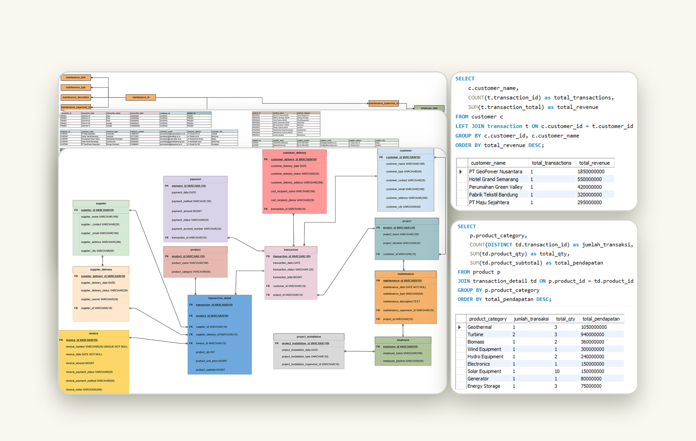

Software & Data · Team project
Renewable Energy DB
A relational database for a renewable energy installer. It connects sales, installation projects, maintenance, supplier deliveries, invoices and payments, so every order can be traced from the customer to the supplier. Designed from one messy table to Third Normal Form.

The problem
A renewable energy company runs several linked processes: selling equipment, managing installation projects, maintaining systems, and coordinating payments with suppliers. Without structured data, records go wrong and the whole flow is hard to follow.
Everything in one table
- The starting point mixes customers, products, suppliers, invoices and payments in the same rows
- The same customer or product data is repeated again and again
Anomalies
- A new supplier cannot be added without a transaction
- Changing one price means editing many rows, and deleting one transaction can erase delivery and invoice records
The solution
- Normalise step by step into 13 tables in 3NF
- Link them with primary and foreign keys, then check the design with real queries
From UNF to 3NF
The design follows the normalisation steps in order. Each stage fixes one kind of problem. Click any image to see it full size.
UNF → 1NF
Split cells that hold several values (such as two products in one row) into separate rows.
Anomalies
Show the insert, update and delete problems that the 1NF tables still have.
Dependencies
Find full, partial and transitive dependencies for every table.
2NF → 3NF
Remove partial dependencies, then move employee data into its own table to remove transitive ones.
UNF → 1NF
Six blocks of attributes in the unnormalised data, then the same data with one value per cell.
Anomalies in 1NF
One concrete case for each kind: adding a supplier, changing a product price, and deleting a transaction.
Functional dependencies
Which attributes depend on which key. This diagram decided how the tables were split.
2NF → 3NF
First 2NF: 11 tables, with the installation columns still inside project. Then 3NF: 13 tables, with installation and employee data separated and every non-key column depending only on its own key.
What changed from 2NF to 3NF
Most tables were already clean after 2NF, so only two things changed: 11 tables became 13. 2NF removes columns that depend on part of a key. 3NF goes one step further and removes columns that depend on another non-key column.
1. Installation gets its own table
- In 2NF, installation date, type and supervisor sat inside
project - But they are decided by
project_installation_id, not byproject_id. That is a transitive dependency - 3NF moves them into
project_installation
2. Employees get their own table
- In 2NF, maintenance and installation only stored a supervisor ID
- The supervisor’s name and position depend on that ID, not on the maintenance or installation record
- 3NF adds
employee, and the supervisor columns become foreign keys to it
| Table | 2NF | 3NF |
|---|---|---|
| project | Includes the installation columns | Project name, duration and customer only |
| project_installation | Not a separate table | New table |
| employee | Not a separate table | New table |
| The other 10 tables | Already in 2NF | Unchanged |
The schema
The ERD above shows all 13 tables. The centre of the design is transaction_detail: its composite key (transaction, product) ties each sold product to the supplier, supplier delivery and invoice behind it.
| Area | Tables | What it holds |
|---|---|---|
| Sales | customer, transaction, transaction_detail, product | Who bought what, at what price and quantity |
| Projects | project, project_installation, maintenance, employee | Installation and maintenance work, with the supervisor in charge |
| Money | payment, invoice | Customer payments and supplier invoices |
| Logistics | supplier, supplier_delivery, customer_delivery | Goods coming in from suppliers and going out to customers |
The schema is written in MySQL (DDL) with primary keys, foreign keys, NOT NULL and a UNIQUE invoice number, then filled with sample data (DML).
Querying it
Two queries check that the tables join correctly and answer business questions.
LEFT JOIN keeps customers even with no transactions. PT GeoPower Nusantara is the largest at Rp 1.85 billion.Limits and next steps
Limitations
- In the final schema,
project_installationhas no link toproject, so an installation cannot be matched to its project by key - The sample data is small and not fully consistent: a transaction total does not always equal the sum of its line items, and a transaction can be marked Unpaid while a full payment exists
- Status columns are free text, with no
CHECK,ENUMor indexes
Next steps
- Add
project_idtoproject_installationwith a foreign key - Make totals and payment status consistent, or compute them with a view
- Add constraints and indexes for status columns and joins
- More analysis: unpaid receivables, supplier performance, maintenance per supervisor
Project files
Full files on Google Drive
The slides (PDF), the DDL and DML SQL script, and the Excel workbook with every normalisation step.
View FilesRun it yourself
- Open the SQL script in MySQL Workbench
- Run it once: it creates the
Renewable_Energydatabase, the 13 tables and the sample data
My contribution
A team project for the Database course at BINUS University, built by five people (Group 12), on the topic Renewable Energy given by the lecturer.
What I did
- Designed the ERD and decided the attributes of each table
- Wrote the SQL scripts (DDL and DML) that create the 13 tables and fill them with sample data
- Worked with the team on the functional dependencies, 2NF and 3NF
- Helped write the documentation and prepare the project demo